back
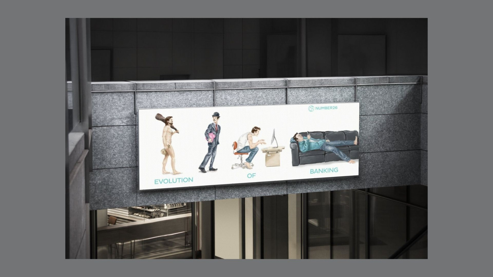
N26: Brand Strategy, Community Building & Creative Production for a Mobile Bank
Brand Manager, N26 (formerly Number26) · Berlin · Brand Strategy · Community Development · Influencer Marketing · Creative ProductionWhen I joined in 2015, N26 was still called Number26 – a Berlin fintech with a bold promise: a bank account that lives on your smartphone. As Brand Manager I helped turn that promise into a brand people wanted to talk about.
My work sat where brand strategy, community development and creative production meet: defining how the brand looked and sounded, building a network of ambassadors who carried it into their own channels, and producing the campaigns and content that made mobile banking feel personal.
Brand Strategy: From Number26 to N26
The company grew fast, and the brand had to grow with it. I worked on positioning, tone of voice and brand consistency through the transition from Number26 to N26 – confident, simple, a little cheeky and always focused on the freedom of banking from your phone. Every touchpoint followed one idea: banking that fits into real life, not the other way round.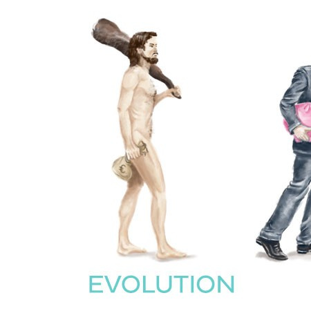
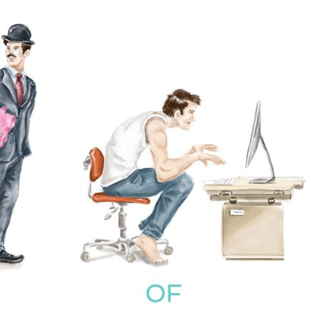
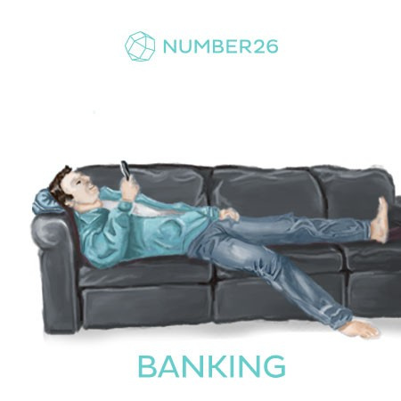
“Evolution of Banking” – an illustrated series that told the brand story with humour, from the caveman to the office desk to banking from the sofa. It ran on Instagram and as an out-of-home campaign.
Community Development & Brand Ambassador Network
Community was one of the brand’s strongest growth drivers. I built and managed a structured brand ambassador programme across key European markets – creators, influencers and professionals who shared N26’s values of independence, mobility and creativity. With regular communication and tailored support, the network grew into a real community that shared honest experiences and co-created content.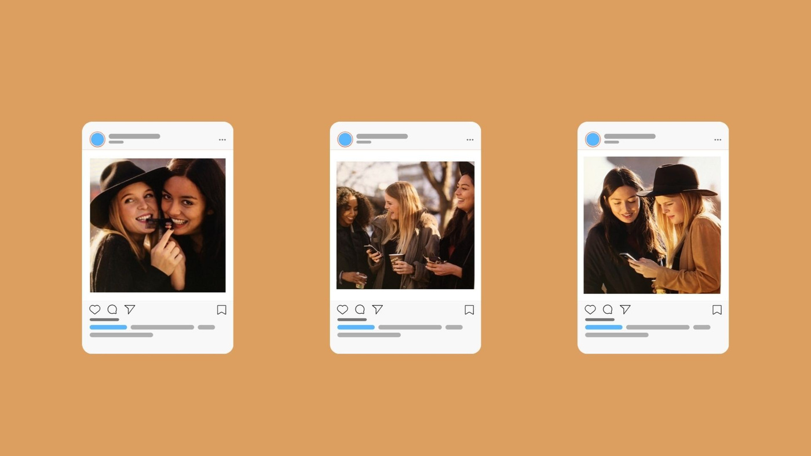
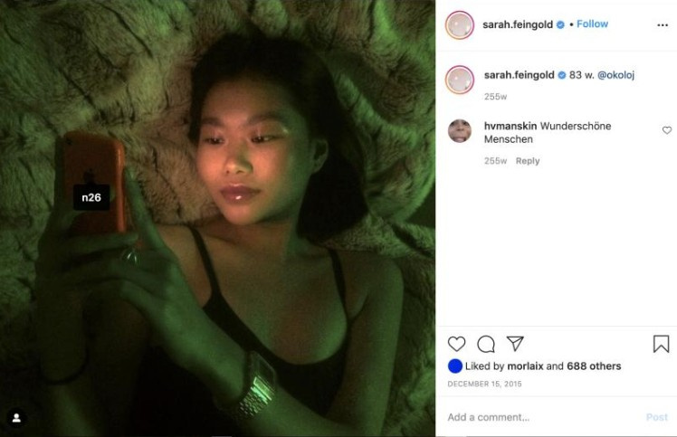
User-Generated Content & YouTube Reviews
Authentic voices built more trust than any ad could. Ambassadors documented their everyday banking, and creators reviewed the app on YouTube – unscripted content that we amplified across our own channels.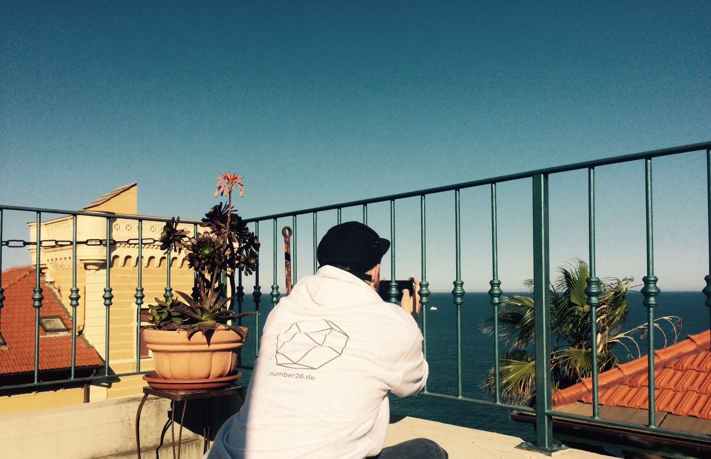
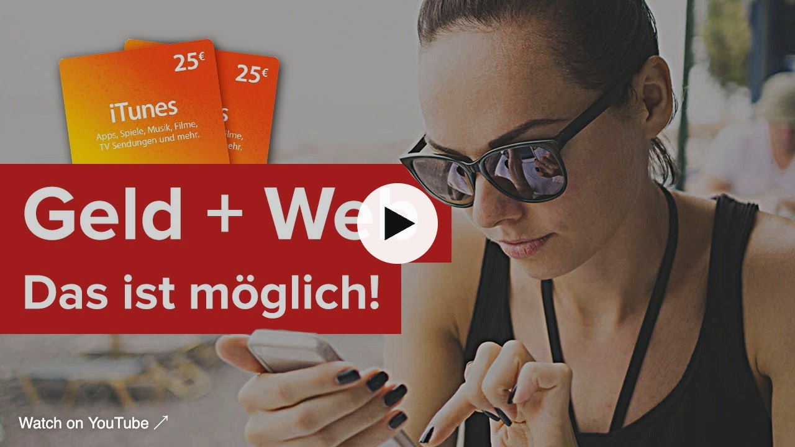
Milestones became community moments – like celebrating the first 80,000 customers together with the people who helped get there.
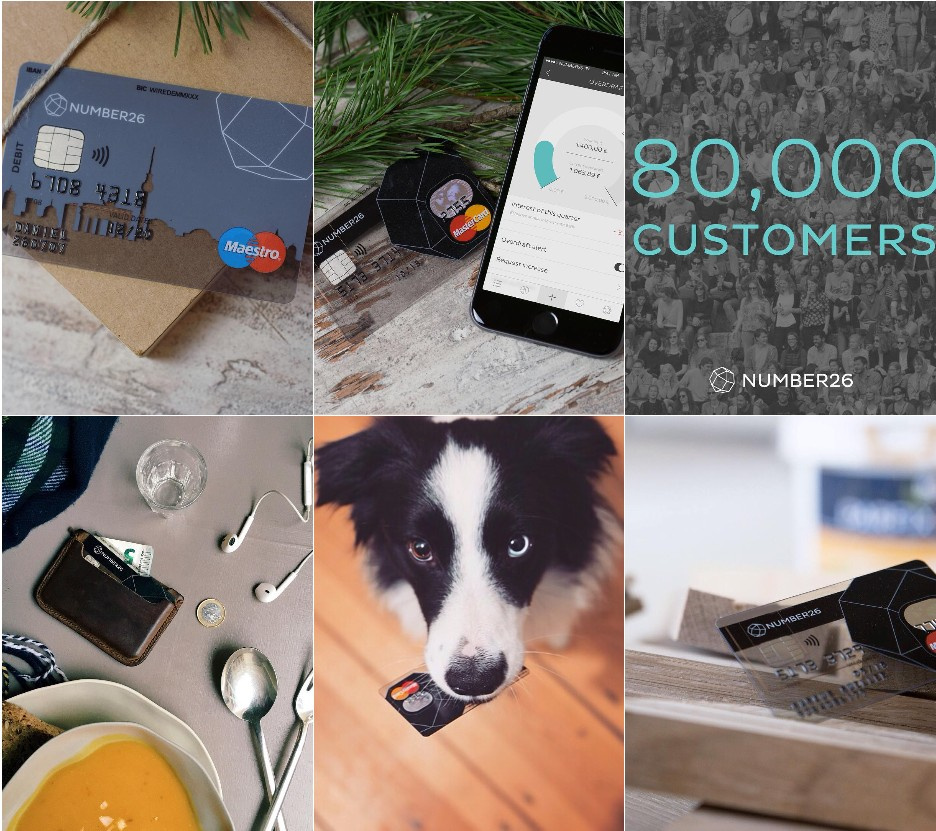
Creative Campaigns, Content & Partnerships
From concept to final asset, I managed creative production for campaigns, social content and brand partnerships together with the in-house marketing and design teams – each piece designed to feel organic, relevant and unmistakably N26. Feature launches like CASH26, which let customers deposit and withdraw cash at the supermarket checkout, were explained in short, personal video formats instead of classic advertising.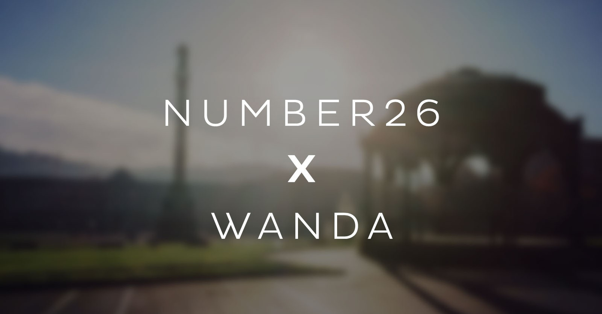
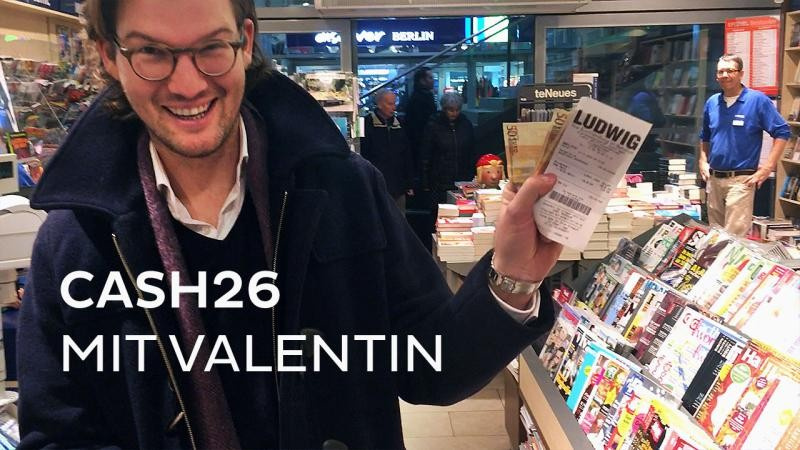
Performance Marketing & Paid Social
Brand and performance worked hand in hand. I developed creative for paid social and performance marketing campaigns, testing formats and messages to turn attention into new accounts.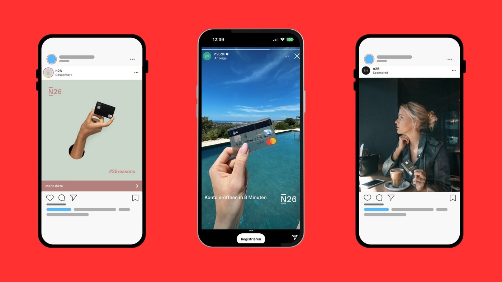
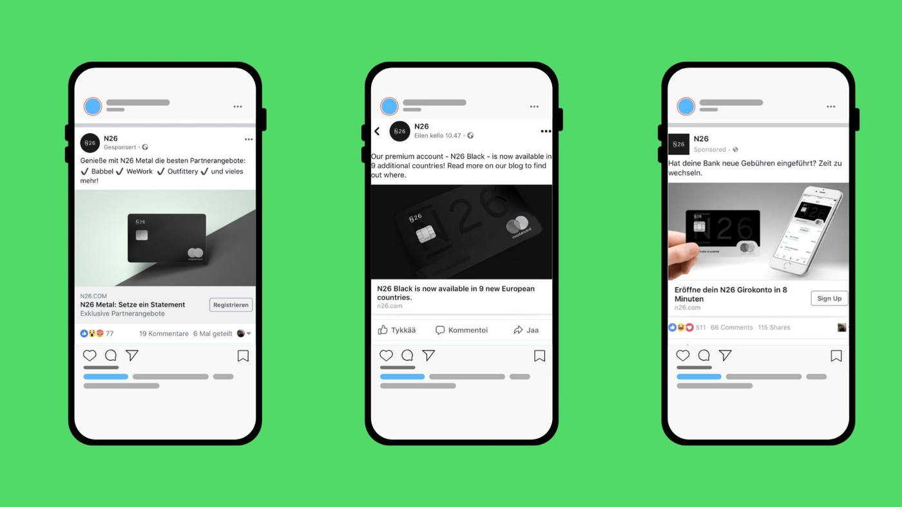
Merchandising & Social Media Activation
To take the brand beyond the screen, I introduced merchandise as part of community engagement – turning products like the “Banking im Hoodie” set into storytelling tools that ambassadors loved to share.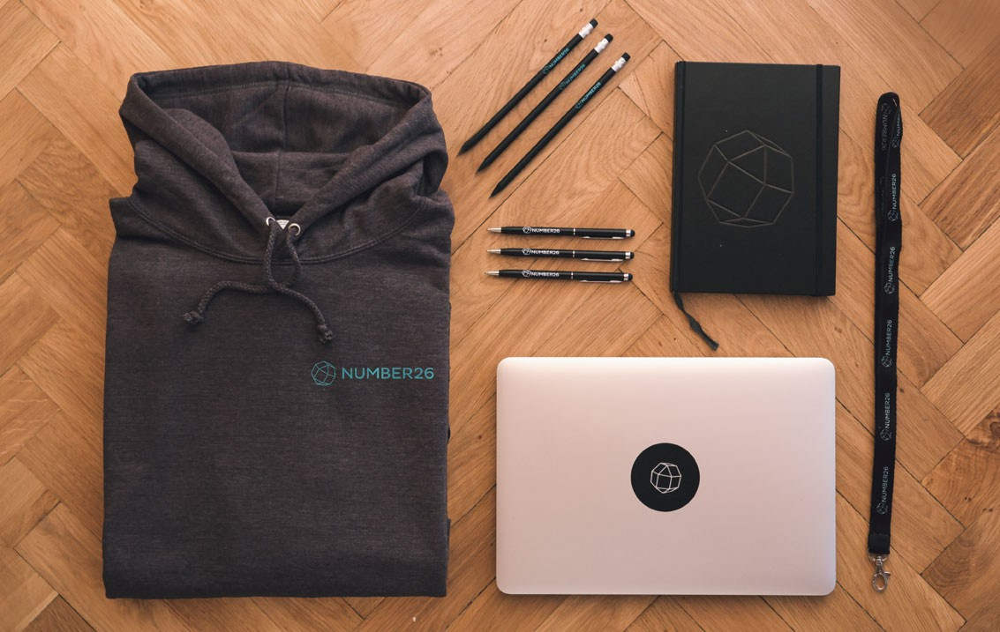
Press
The brand’s rise was followed closely by the media – including a print feature under the headline “No Country for Old Banks”.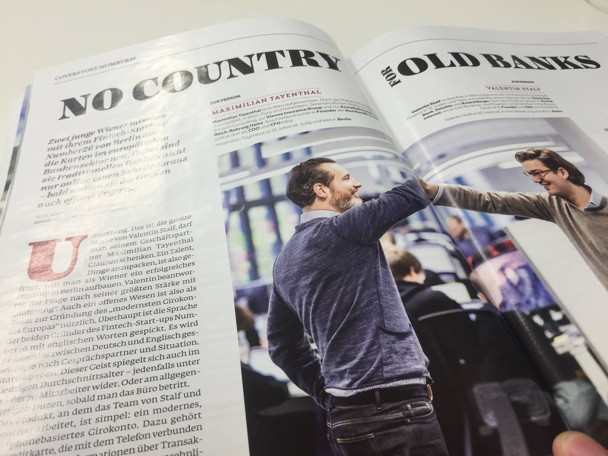
My Responsibilities
— Brand strategy, positioning and tone of voice during the transition from Number26 to N26— Building and managing a European brand ambassador and influencer network
— Community development, user-generated content and YouTube creator collaborations
— Creative production for campaigns, social media, out-of-home and merchandise
— Creative for performance marketing and paid social campaigns
Today I bring this experience to community building and ambassador programs at Table Studio, my community & experience studio in Berlin.
Next case: Holvi →